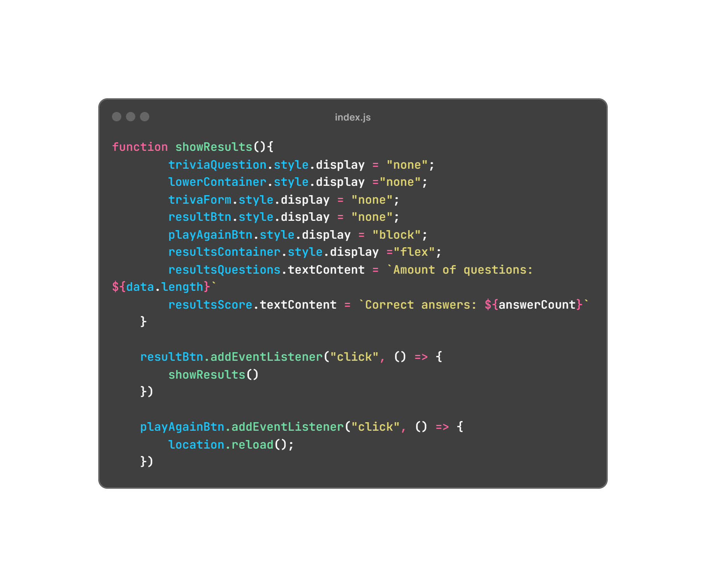

1 / 5
Om mig
Här kan du läsa mer om mig, få veta mer om min historia.
2 / 5
Varför jag söker
Mer information om varför jag söker just till denna kursen.
3 / 5
Varför jag som utvecklare?
Här berättar jag om varför jag kommer bli en grym utvecklare i framtiden.
4 / 5
Tidigare kurser
Här kan du läsa mer om kurser jag har läst.
5 / 5
Github
Här kan du kika på projekt jag har gjort.
Tillbaka
Om mig
Hej, jag är Jacob, 25 år gammal och bor i Helsingborg. Under en lång tid har jag känt mig vilse, och trots att jag har utforskat olika intressen och möjligheter, har ingenting känts helt rätt - tills nu. Personlighetsmässigt är jag snäll och förstående, och jag värdesätter mångfald och individuell olikhet. Jag tycker om att hjälpa andra och finner stor glädje i att kunna göra skillnad i människors liv. Trots det är jag väldigt blyg och introvert, vilket har varit en utmaning för mig i många situationer.
Jag växte upp i Ängelholm och gick högstadiet på Nyhemskolan. Under gymnasiet påbörjade jag flera gånger olika program, men det gick inte som jag hade hoppats. Under den tiden inträffade också personliga händelser som påverkade mig starkt och ledde till att jag tillfälligt avbröt min utbildning. Efter några år av strävan att bli e-sportsproffs insåg jag behovet av att utforska andra alternativ. Jag tog då ett arbete på Casino Marienlyst i Danmark som poker dealer. Trots spännande erfarenheter var arbetsmiljön inte rätt för mig, och jag kände mig nedstämd och stressad. Att återvända till mitt spel blev en tillflykt där jag kände mig uppskattad och duktig.
Efter min tid på Casino Marienlyst hade jag möjlighet att reflektera över mitt liv. Jag kände mig annorlunda och sökte därför hjälp. Jag fick diagnosen högpresterande autism och ADD, vilket förklarade många av mina utmaningar. Diagnosen blev en viktig del av min självförståelse och öppnade dörrar för stöd och anpassningar.
Efter diagnosen deltog jag i en stresshanteringskurs och introducerades till Misa, en daglig verksamhet som stöder personer med autism. Där kände jag mig förstådd och kunde utveckla mina färdigheter.
Efter ett tag på Misa började jag fundera över vad jag skulle kunna tänka mig att jobba med. På min fritid började jag experimentera med kodning. Jag hade tidigare haft ett stort intresse för datorer och teknik, men det hade blivit en lång paus sedan jag hade rört kod. Trots min brist på energi eller ork under praktiken på XXL, trivdes jag ändå i miljön. Arbetsuppgifterna var dock enformiga och saknade den mentala utmaning jag sökte. Detta fick mig att inse att jag behövde utveckla min kompetens inom webbutveckling. Därför bestämde jag mig för att återvända till mina onlinekurser i kodning. Efter några månader fick jag höra talas om Code X, en daglig verksamhet som fokuserar på IT. Där har jag nu varit på i några månader och trivs väldigt bra. Att arbeta med kodning har blivit min passion och jag känner att jag äntligen har hittat min plats i arbetslivet.
League of Legends har varit en stor del av mitt liv i över 10 år. Jag har alltid haft en kärlek för datorspel, men det som verkligen lockade mig till LoL var möjligheten att tävla. Att kunna mäta min skicklighet och strategiska tänkande mot andra spelare gjorde det så attraktivt för mig. Att delta i tävlingar och utveckla mina färdigheter har gett mig många minnesvärda upplevelser och lärt mig värdefulla läxor om samarbete, strategi och uthållighet.
Genom spelet har jag också lärt mig att ta förluster och reflektera över mina misstag för att växa och bli bättre. En viktig läxa jag har tagit med mig från League of Legends till livet är förmågan att analysera andra för att snabbare lära mig och förstå saker. Detta har hjälpt mig både personligen och professionellt, och det är en skicklighet som jag värdesätter högt och aktivt använder mig av i min vardag.
Min passion för datorspel och kodning har varit vägledande för mig när jag utforskat olika karriärvägar. Genom att följa mina intressen och investera tid och energi i dem har jag funnit en känsla av syfte och tillfredsställelse som jag tidigare saknade. Att hitta min plats i arbetslivet har varit en resa av självupptäckt och personlig tillväxt, och jag ser fram emot att fortsätta att utvecklas och utforska nya möjligheter i framtiden.
Varför jag söker
Denna webbutvecklingskurs verkar vara det perfekta nästa steget för mig. Jag är särskilt intresserad av att fördjupa mina kunskaper inom front-end utveckling, men jag ser också fram emot att lära mig mer om back-end och fullstack utveckling. Genom att delta i denna kurs tror jag att jag kommer att kunna ta mina färdigheter till nästa nivå och öppna upp nya möjligheter för mig inom branschen.
Utöver att utveckla min kompetens ser jag också fram emot att vara en del av gemenskapen som denna kurs erbjuder. Att kunna delta i diskussioner, dela idéer och lära av andra med liknande intressen är något som jag tror kommer att vara mycket givande och inspirerande för mig.
Jag är också angelägen om att återuppta rutiner och struktur i mitt studieliv. Under de senaste åren har jag arbetat självständigt och utanför en formell utbildningsmiljö, vilket har varit både utmanande och givande. Genom att delta i den här kursen hoppas jag kunna stärka min disciplin och organisering som kommer att vara till nytta inte bara i min utbildning utan också i min karriär som webbutvecklare.
Sammanfattningsvis ser jag fram emot att bli en del av denna kurs och att få möjligheten att växa och utvecklas som webbutvecklare. Jag är övertygad om att min passion, ihärdighet och vilja att lära mig kommer att bidra till en givande och framgångsrik erfarenhet.
Varför jag som utvecklare?
Jag känner äntligen att jag har funnit min väg inom mitt yrkesliv. Min inställning till kodning och utveckling har genomgått en dramatisk förändring under det senaste året. I början kände jag mig nedstämd när jag stötte på buggar eller när koden inte fungerade som förväntat. Men nu betraktar jag det som en naturlig del av min vardag. Varje dag blir inte som jag förväntat mig, och det är något jag har accepterat. Det har hänt att jag stött på situationer där det varit mer komplicerat än jag först tänkt mig. Ibland har koden fungerat en sekund för att sedan sluta fungera helt, eller så har jag helt enkelt glömt bort något enkelt (ett klassiskt stavfel).
Jag uppskattar hela processen. Att lösa problem, att förbättra och att lära mig nya saker är en del av det som får mig att brinna för utveckling.Dessutom strävar jag efter att hålla mig uppdaterad med den senaste tekniken. Det kan vara allt från att utforska nya chatbotar till att söka inspiration och tips på YouTube från personer med mycket mer erfarenhet än jag.
Men jag tror att min största styrka är min beslutsamhet. Jag har bestämt mig för att detta är vad jag vill göra, och det finns ingen återvändo. Jag vet att det kommer att krävas hårt arbete och många timmar av förvirring, men jag är övertygad om att det kommer att löna sig.
Slutligen vill jag bara säga att jag är driven av en stark nyfikenhet och en vilja att bli bättre. Mitt mål är att kunna bidra till en arbetsplats och göra en verklig skillnad.
Tidigare kurser
Udemy
Min front-end resa började med en kurs av Dr. Angela Yu på Udemy. Den gav mig gedigna baskunskaper i HTML, CSS och JavaScript. Jag fick även prova på Bootstrap, jQuery, Node.js, Express.js, SQL och React.js. När vissa ämnen kändes för avancerade, valde jag att fördjupa mig i grunderna först.
The odin project

Jag gick vidare till The Odin Project, som jag hört mycket gott om. Kursen är textbaserad och erbjuder mycket information, perfekt för att fördjupa sig i ämnen. Jag tog en paus för att följa en annan kurs jag föredrog, men planerar att återuppta The Odin Project snart.
freeCodeCamp

På freeCodeCamp fördjupade jag min kunskap inom algoritmer och datastrukturer. Kursen var mycket givande och jag uppskattade verkligen deras algoritmövningar. Jag planerar att fortsätta använda deras resurser för att stärka mina färdigheter ytterligare och dra nytta av deras omfattande material.
Scrimba
Scrimba är min absoluta favoritkurs. Deras inbyggda kodeditor i webbläsaren gör det superlätt att följa med. De erbjuder ett stort utbud av kurser från olika specialister. De betonar vikten av repetition: man blir inte bra genom att bara titta man måste också öva.

På startsidan finns en header, två select-element (drop-down menyer) där användaren kan välja antalet frågor som quizet ska innehålla, hur lång tid användaren får per fråga och en knapp som startar själva quizet.
En event listener läggs till på startknappen som hämtar data från filen questions.json. Datan parsas sedan till ett JavaScript-objekt som används i koden.
Sedan en loop som blandar de 20 frågorna som finns i JSON-filen slumpmässigt. Om användaren väljer 5 frågor, ser loopen till att de 5 frågorna blir olika varje gång, istället för att alltid vara samma fem frågor.
Sist en del som uppdaterar layouten, tar bort element som inte längre behöver visas och visar de som behöver vara synliga. Sedan begränsas antalet frågor till det antal som användaren valt, genom värdet i select-elementet. Tre funktioner anropas.
Funktionen loadQuestion hämtar den aktuella frågan från questions-listan med hjälp av det givna indexet. Sedan uppdaterar den textinnehållet för HTML-elementet (triviaQuestion) med den aktuella frågan. Dessutom sätter den värdena för svarsalternativen på sidan baserat på de alternativ som finns i frågeobjektet.
Funktionen checkAnswer används för att hantera användarens svar. När användaren klickar på ett svarsalternativ inaktiverar funktionen alla andra alternativ för att förhindra flera svar. Den kontrollerar sedan om det valda svaret är korrekt genom att jämföra det med det korrekta svaret från vår JSON-data av svarsalternativ. Om svaret är korrekt markeras det valda alternativet som korrekt och olika åtgärder vidtas, såsom att öka antalet korrekta svar, uppdatera visningen och hantera knappar. Om svaret är felaktigt markeras det valda alternativet som felaktigt och åtgärder vidtas. Till sist om användaren har svarat på alla frågor, visas en resultatknapp, annars visas en knapp för att gå vidare till nästa fråga.
Detta kodavsnitt lyssnar efter klick på en knapp med id nextBtn. När knappen klickas ökar räknaren count och indexet för den aktuella frågan currentQuestionIndex. Knappen göms sedan, en ny fråga laddas med hjälp av loadQuestion funktionen och layouten återställs med resetUi funktionen. Antalet frågor uppdateras i questionCount elementet. Sedan kontrolleras användarens svar på den aktuella frågan med checkAnswer funktionen och en hover-effekt läggs till med addHoverEffect.
Funktionen resetUi återställer alla input-knapparna till sitt ursprungliga tillstånd genom att ta bort disabled-egenskapen. Den tar även bort CSS-klasserna input-wrong och input-correct.
Funktionen showInputs väljer alla input-element som har egenskapen name="answer". Därefter ändrar den deras opacity till 1 och lägger till CSS-klassen hover-effect.
Funktionen addHoverEffect lägger till klassen hover-effect till alla input-element som har egenskapen name="answer".

Funktionen removeHoverEffect tar bort klassen hover-effect från alla input-element som har egenskapen name="answer".
Funktionen showResults döljer frågesporten och visar resultatet. När användaren trycker på "results"-knappen kallar den på funktionen showResults och när "play again"-knappen trycks laddas sidan om för att spela igen.
I detta projekt ville jag också skapa en timer.Jag har länge velat veta hur man åstadkommer de speciella effekternatimern använder. Jag tog extern hjälp ifrån en YouTube-video. Timern var mycket mer komplicerad är vad jag trodde.